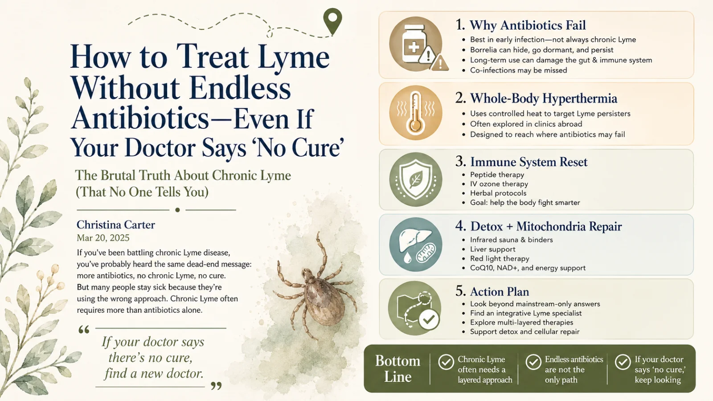

How to Treat Lyme Without Endless Antibiotics — Even If Your Doctor Says "No Cure"
The brutal truth about chronic Lyme that no one tells you: many people stay sick not because they can't heal, but because they're using the wrong approach. If antibiotics haven't worked, it's time to shift strategies — here's what actually helps.

If you've been battling chronic Lyme, you've probably heard some version of this from a doctor:
- "You just need more antibiotics." (Even though you've already tried multiple rounds.)
- "Lyme can't be chronic." (Tell that to the millions still sick.)
- "There's no cure." (But some people do get better — why?)
Here's the biggest obstacle to healing: conventional medicine often dismisses chronic Lyme entirely — calling it Post-Treatment Lyme Disease Syndrome — or prescribes endless antibiotics that wreck your gut and immune system while failing to eradicate the infection. The truth that changes everything? The real reason people stay sick is that they're using the wrong approach.
Quick answer
Why do antibiotics fail for chronic Lyme?
Antibiotics work best in early Lyme, roughly the first 30 days of infection. In chronic Lyme they often fall short because Borrelia can go dormant (where antibiotics can't reach it) and form persister cells that evade treatment, chronic Lyme frequently involves co-infections that antibiotics may miss, and long-term antibiotic use can damage the gut — where much of the immune system lives. This is why many people need a broader, layered approach rather than more of the same.
Key Takeaways
- Antibiotics work best early. For chronic Lyme they often fail because the bacteria hide in persister forms and biofilms — and co-infections go untouched.
- Healing isn’t just killing the bug — it’s rebuilding the body’s ability to heal.
- A layered approach tends to work: heat (hyperthermia), immune reset, detox and drainage support, and rebuilding gut, nervous-system, and nutrition foundations.
- Chronic Lyme is not a death sentence — but it needs a smarter, multi-pronged strategy than “more antibiotics.”
- “No cure” may mean the wrong approach, not no hope.
Why antibiotics fail for chronic Lyme
Most doctors treat Lyme the way they treat strep throat: a round (or ten) of antibiotics. But Lyme isn't strep throat. It's a complex, stealth infection that hides, mutates, and resists antibiotics over time. The science bears this out:
- Antibiotics work best in the early stage (first ~30 days of infection). After that, they often fail to fully eradicate the bacteria.1
- Borrelia burgdorferi can go dormant — meaning antibiotics can't touch it. Once the drugs stop, it can reactivate.2
- Long-term antibiotics wreck the gut — and roughly 70% of your immune system lives in your gut.3
- Antibiotics don't kill Lyme persisters. These persister cells evade treatment and require an entirely different approach.4
- Chronic Lyme is often a multi-infection problem. Antibiotics target Lyme but frequently miss co-infections like Bartonella, Babesia, and Mycoplasma.5
(If you want the deeper "why," I wrote a companion piece on when antibiotics stop working for chronic Lyme.)
So if antibiotics don't work, what does?
The key to eradicating Lyme is not just killing the bacteria — it's rebuilding the body's ability to heal. Here's the layered approach that actually tends to work:
Whole-body hyperthermia — using heat where antibiotics fail
Lyme bacteria die at high temperatures (around 106°F+), but your body can't safely reach those levels on its own. Medical-grade whole-body hyperthermia raises body temperature to roughly 107°F under controlled, monitored conditions — stressing Lyme persisters while protecting healthy cells.
Clinics in Germany, Mexico, and Switzerland have used this method to treat chronic Lyme, and hyperthermia has been shown to affect Borrelia in lab settings and improve outcomes in real-world clinics.6
Immune system reset — because your body needs to do the work
Lyme weakens the immune system, making relapse and reinfection common. The goal isn't only to kill Lyme, but to restore immune function so your body keeps it in check naturally.
- Peptide therapy — modulates the immune system to target Lyme more effectively.
- IV ozone therapy — increases oxygen in the body, which Lyme bacteria don't tolerate well. (More on these in my guide to stem cell, SOT & ozone therapies.)
- Herbal protocols — herbs like Japanese knotweed and cat's claw have outperformed some antibiotics in lab studies.7
(This is also the arena of Treg therapy — retraining a dysregulated immune system.)
Detox pathways — because killing Lyme isn't enough
When Lyme bacteria die, they release toxins that can make you feel worse — the Jarisch-Herxheimer reaction. If your body can't detox efficiently, you'll stay sick even after treatment.
- Infrared sauna therapy — sweating helps eliminate biotoxins.
- Binders like activated charcoal & chlorella — pull Lyme toxins out of the body.
- Liver support — milk thistle and glutathione help process toxins. (See also TUDCA and detox practices.)
Mitochondria repair — restoring energy after Lyme
Chronic Lyme drains your energy because it hijacks your mitochondria — your cells' power generators. Healing requires rebuilding cellular energy.
- Red light therapy (photobiomodulation) — stimulates mitochondrial repair.
- CoQ10 & NAD+ therapy — essential for cellular energy production.
- Ketogenic diet — provides clean energy to cells and reduces inflammation. (More in my Lyme diet guide.)
The choice is yours — stay stuck or take a new path
If you've tried antibiotics and you're still sick, it's time to shift strategies. Chronic Lyme is not a death sentence — but it requires a smarter approach. Here's your action plan:
- Research beyond mainstream medicine. Start with books like Why Can't I Get Better? by Dr. Horowitz.
- Find an integrative Lyme specialist — someone who treats Lyme with a multi-layered approach, not just antibiotics. (Here's how to find one.)
- Explore hyperthermia & immune therapies — game-changers for people who've been stuck for years.
- Support detox & mitochondria — killing Lyme isn't enough; you have to repair what it damaged.
If your doctor keeps telling you "there's no cure," find a new doctor. People are healing from chronic Lyme every day — not with endless antibiotics, but with the right approach. If you want help figuring out what that looks like for you, that's exactly what I'm here for.
Beyond Antibiotics FAQ
They work best in early Lyme (~first 30 days). In chronic Lyme, Borrelia can go dormant (out of antibiotics' reach) and form persister cells that evade treatment; co-infections are often missed; and long-term use damages the gut, where much of the immune system lives. That's why many people need a broader, layered approach.
Some people improve using layered approaches beyond antibiotics: infection-targeting therapies (whole-body hyperthermia, herbal protocols), immune support (peptides, IV ozone, herbs), detox support, and mitochondrial repair. It's not a guaranteed cure and is best done with an experienced integrative, Lyme-literate clinician.
No universally guaranteed cure — be wary of anyone who promises one. But many people do get meaningfully better by shifting from a single antibiotic strategy to a layered approach that both targets the infection and rebuilds the body's ability to heal. Results vary.
A hospital-based therapy that raises core body temperature into a high, controlled range to stress heat-sensitive Lyme bacteria (including persisters) while protecting and monitoring healthy cells. Offered at clinics in Germany, Mexico, and Switzerland, used as one part of a broader recovery plan.
References
- Journal of Clinical Microbiology (2001) — antibiotic efficacy in early vs. later Lyme infection.
- PLOS ONE (2015) — dormancy and persistence of Borrelia burgdorferi.
- Frontiers in Immunology (2018) — the gut microbiome and immune function.
- Antimicrobial Agents and Chemotherapy (2019) — Borrelia persister cells and treatment evasion.
- Infectious Disease Clinics of North America (2015) — tick-borne co-infections.
- International Journal of Hyperthermia (2020) — hyperthermia effects on Borrelia and clinical outcomes.
- Frontiers in Microbiology (2018) — botanical agents (incl. Japanese knotweed) against Borrelia burgdorferi.
Medical disclaimer: This article is for educational purposes only and reflects personal experience and general research. It is not medical advice, diagnosis, or treatment, and it does not replace consultation with a qualified healthcare professional. References are provided for general context; study interpretations are summarized and simplified. No treatment described here is a guaranteed cure, and individual results vary. Do not start, stop, or change any treatment — including antibiotics — except under the direction of your physician. Christina Carter is a patient advocate and educator, not a licensed medical provider.